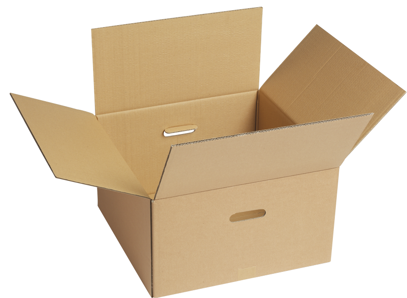
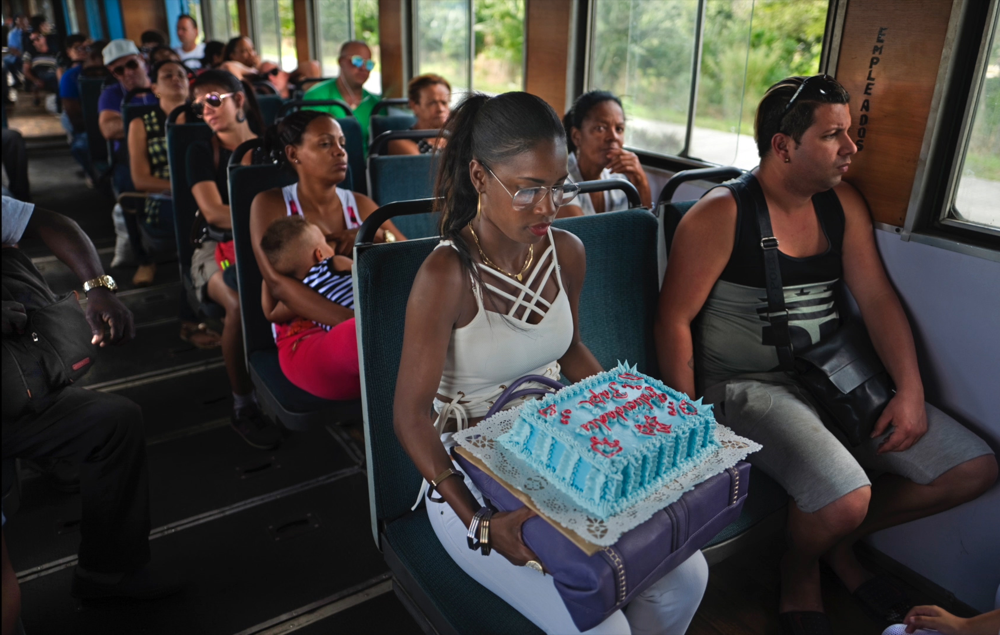

Gezocht
De doos
Klik op de foto hieronder voor hints
Waar is de doos?
Dat je met een taart in de trein gaat zitten, tuurlijk. Dat je hem op je schoot zet, oké. Maar dat je hem uit de doos haalt, ik kan er niet bij. Of gaat ze hem uitdelen in de trein? Felicidades Papi staat er met spuitletters op, vader is jarig, hij krijgt straks de hele taart.
Ze heeft de breedste zitting genomen, het is er een voor personeel, empleados staat op de wand te lezen. Ze had zich in het midden kunnen installeren, maar ze is zover mogelijk gaan zitten van de man met een postuur of hij niet vies is van een stuk taart.
Kostte de doos extra en wilde ze dat uitsparen? Waarom schoof ze hem dan niet in haar paarse tas? Nee, tas en taart zijn even hoog, meet maar na. Eenmaal in de doos bleek het niet te passen. Met wat duwen en pletten misschien wel, maar dat kun je bij zo'n taart beter laten. Moet je kijken hoe onder de rode letters een zachtblauw taludje zit, Felicidades Papi springt je tegemoet. De letters een centimeter indrukken en het hele effect is weg. Een appeltaart die net uit de oven komt, moet je laten afkoelen voor je hem inpakt, anders wordt-ie slap. Maar dit is een slagroomtaart, deze komt uit de koelkast. Met al die room erop moet-ie zo koel mogelijk bewaard worden.
De passagiers zijn luchtig gekleed, de raampjes staan open, het is warm in de coupé. In de tas was de taart koeler gebleven, maar daar paste hij niet in. In de doos was-ie ook koeler gebleven. En toch de taart eruit gehaald. Waar heeft ze de doos eigenlijk gelaten?
Achter haar geeft een vrouw een kind de borst dat een leeftijd heeft waarvan ik denk: wordt het niet tijd voor drinken in plaats van zuigen.
Tegenover haar zit een jonge vrouw, rechtsonder is een kleine hand en een broek met gaatjes zichtbaar. Stel dat daar haar jongere zusje zit. Zij heeft de doos. De rails van de Cubaanse spoorwegen zijn hobbelig, opeens kan een kudde koeien de doorgang versperren, moet de machinist boven op de rem staan. De dames willen voorkomen dat de taart dan in de doos tegen de wand schuift en beschadigt.
Zeker weten? Even de weerspiegeling in haar bril checken. Jammer, ze kijkt naar beneden, alleen de taart en een rand van haar topje zijn zichtbaar.
Waar is de doos?